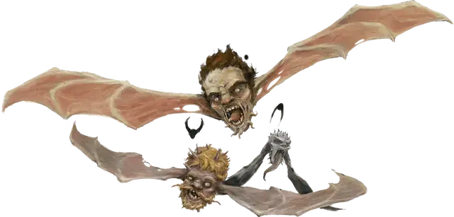

Варгулья
Vargouille
Крошечное Исчадие, хаотично-злое

Класс Доспеха 12
Хиты 13 (3к4 + 6)
Скорость 5 футов, летая 40 футов
| мод | спас | ||
|---|---|---|---|
| СИЛ | 6 | −2 | −2 |
| ЛОВ | 14 | +2 | +2 |
| ТЕЛ | 14 | +2 | +2 |
| мод | спас | ||
|---|---|---|---|
| ИНТ | 4 | −3 | −3 |
| МДР | 7 | −2 | −2 |
| ХАР | 2 | −4 | −4 |
Сопротивление урону огонь, холод, электричество
Иммунитет к урону яд
Иммунитет к состояниям отравление
Чувства тёмное зрение 60 футов, пассивное Восприятие 8
Языки Бездны, Инфернальный, понимает любые языки, которые знал до того как стать варгульей, но не может говорить
Опасность 1 (200 опыта)
Бонус мастерства +2
Среда обитания Болото, Подземье, Пустыня
Действия
Укус. . Рукопашная атака оружием: +4 к попаданию, досягаемость 5 футов, одна цель. Попадание: 5 (1к6 + 2) колющего урона плюс 10 (3к6) урона ядом.
Поцелуй. Варгулья целует одного недееспособного гуманоида в 5 футах от себя. Цель должна преуспеть в спасброске Харизмы Сл 12 или стать проклятой. Проклятая цель теряет 1 очко Харизмы каждый час, а её голова принимает извращенные изменения. Проклятие не прогрессирует пока цель находится в области солнечного света или под действием заклинания дневной свет [daylight] и это время не учитывается. Когда Харизма проклятого существа становится равна 2, оно умирает и его голова отрывается от тела и становится новой варгульей. Если сотворить на цель снятие проклятья [remove curse], высшее восстановление [greater restoration] или похожее заклинание до того, как трансформация завершится, то проклятие снимется. В таком случае отменяются изменения цели, сделанные проклятием.
Ошеломляющий визг. Варгулья визжит. Каждый гуманоид и зверь не далее 30 футов от варгульи и способный её слышать должен преуспеть в спасброске Мудрости Сл 12 или стать испуганным до конца следующего хода варгульи. Испуганные таким образом цели ошеломлены. Если спасбросок цели успешен или эффект для неё закончен, то цель получает иммунитет к Ошеломляющему Визгу всех варгулий на 1 час.
Описание
До тех пор пока мы не увидели как голова короля, оторвавшись от его плеч, взлетела над фонтаном крови, затем чтобы вгрызться в свои собственные, падающие на пол из брюха, потроха – до тех пор мы не видели в жизни ничего! И если вам всё ещё хочется пожить, нам следует прекратить глазеть и бежать!
– Эльминстер
Визжащая, порхающая и отвратная на вид, с телом в виде отделенной от туловища головы и крыльями как у летучей мыши на месте ушей, варгулья вылетает из Бездны на другие планы существования, например, Карцери, где становится угрозой. Каждая варгулья разносит болезнь, которая производит новых варгулий. Стая летящих варгулий – верный признак скорого распространения чумы зла и хаоса.
Неприятности из Бездны. Рои варгулий порхают по небу и в пещерах Бездны. Могущественные и умные демоны не обращают на них внимания, так как варгульи не могут причинить им вреда.
Даже самые слабые демоны, такие, как мэйны или дретчи, опасаются варгулий только если те появляются в больших количествах. На Нижних Планах у варгулий редко бывает возможность съесть живую жертву помимо мелких вредителей. Чаще всего им приходится лакать ихор, остающийся после убийства одним демоном другого.
Мир ждет. Из–за своего инстинктивного голода и желания полакомиться живой добычей, варгульи стремятся покинуть Нижние Планы. В редких случаях при вызове демона на другой план варгулья попадает туда тоже, прицепившись за демона как репейник.
Ужасное размножение. Свободно летающие по Материальному Плану варгульи – страшная угроза для всех существ, в особенности, для гуманоидов. Их ужасный визг может парализовать страхом других существ, и такие жертвы становятся беззащитными против проклятого поцелуя варгульи. Предосторожности, которые предпринимают смертные для контроля призванного демона, редко предусматривают наличие случайного пассажира на нем, так что варгулья может улететь свободно. Поцелуй варгульи заражает гуманоида адским проклятьем. Если ему позволить подействовать, проклятье вызывает отвратительную трансформацию и проникновение духа Бездны в тело. За несколько часов на голове жертвы появляются демонические черты, например клыки, рога или щупальца. В то же время уши жертвы вырастают и преобразуются в нечто подобное крыльям летучей мыши. Наконец, голова жертвы отрывается от туловища, что сопровождается фонтаном крови, и становится новой варгульей, которая при этом может сразу же начать жадно питаться жизненными соками собственного бывшего тела. Солнечный свет или яркое освещение может замедлить эту трансформацию, так что варгульи инстинктивно сторонятся яркого света.